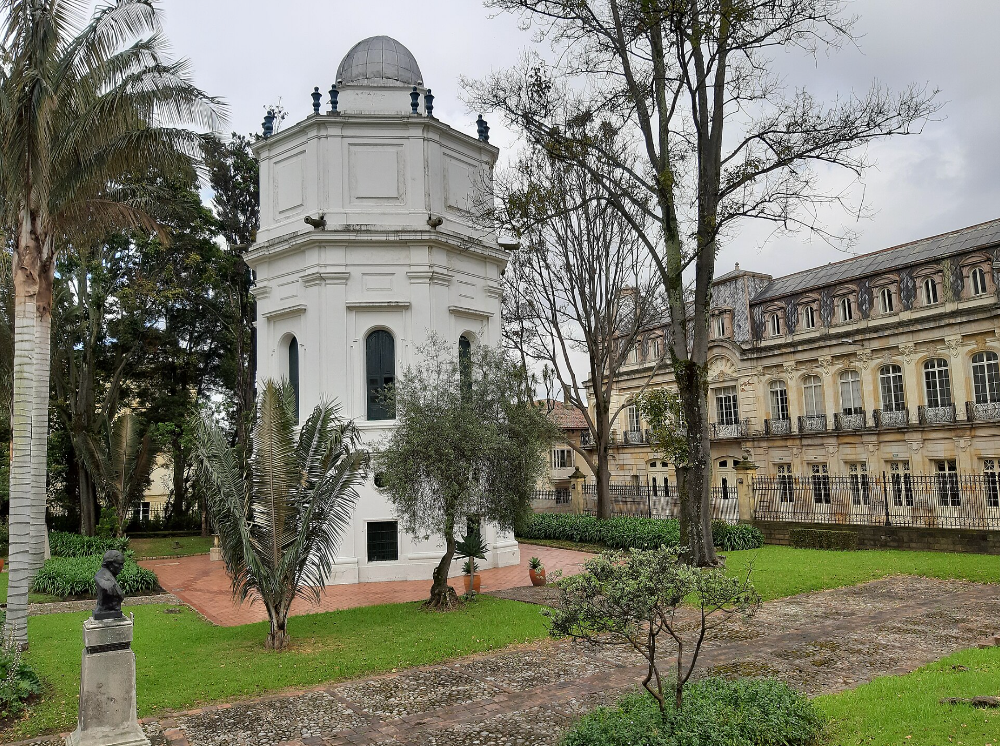
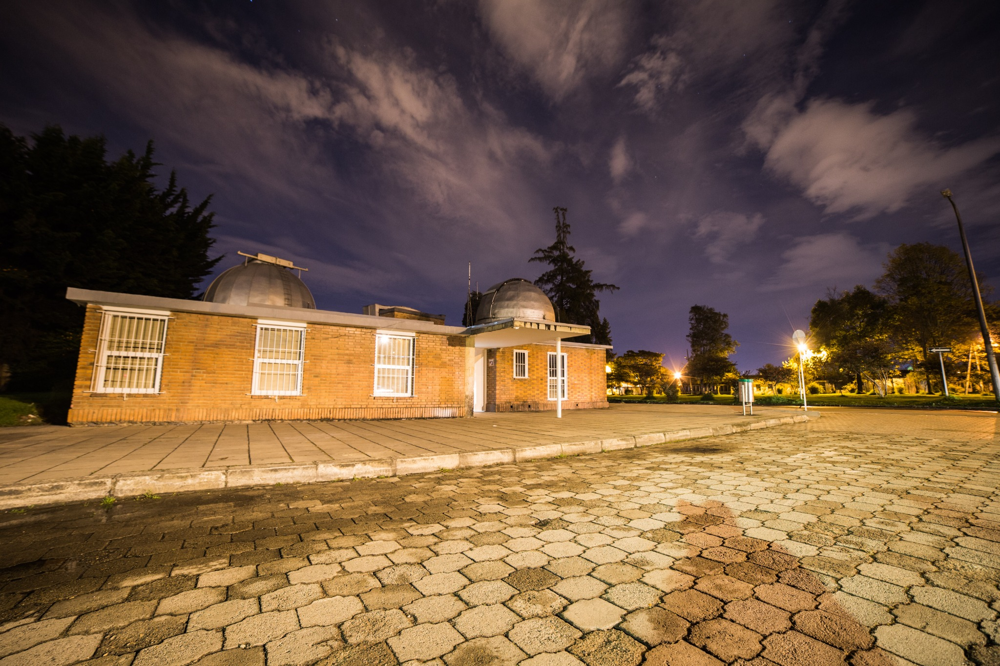

MEMORIA DE LA CIENCIA
Sede histórica
La arquitectura y los instrumentos de un lugar esencial para entender la historia científica del país.
Explorar su historia ↗BOGOTÁ, COLOMBIA · DESDE 1803
Exploramos el universo, formamos nuevas generaciones y compartimos un patrimonio que une la ciencia con la historia de Colombia.
EL OBSERVATORIO
El OAN reúne investigación, enseñanza y apropiación social del conocimiento en la Facultad de Ciencias de la Universidad Nacional de Colombia.

La arquitectura y los instrumentos de un lugar esencial para entender la historia científica del país.
Explorar su historia ↗
Docencia, investigación y encuentros alrededor de las grandes preguntas de la astronomía.
Conoce nuestra comunidad ↗
INVESTIGACIÓN
Física solar, evolución estelar, agujeros negros, cosmología y patrimonio científico. Diferentes caminos para construir conocimiento.
Explora grupos y líneas ↗Imagen NASA/SDO · colores asociados a la observación ultravioleta.ASTRONOMÍA PARA TODOS
Investigación y divulgación para encontrarnos con nuevas ideas sobre el universo.
Leer la revista ↗Entrevistas, conversaciones, prensa y producciones audiovisuales con participación de nuestra comunidad.
Explorar la mediateca ↗Sede histórica, sede académica y domo planetario: experiencias para acercarse a la astronomía.
Consultar servicios ↗EL OBSERVATORIO EN COMUNIDAD
Un encuentro entre disciplinas para aprender astronomía y compartirla con otros.
Conoce Cúmulo ↗Recursos y canales para mantener el vínculo con la Universidad y el Observatorio.
Volver a encontrarnos ↗Proyecciones astronómicas para descubrir el cielo y aprender en grupo.
Explora el Domo ↗VOLVER A LAS CONVERSACIONES
Conferencias, invitados y una biblioteca visual para explorar la astronomía a tu ritmo.
Explorar las conferencias ↗Conoce la iniciativa de inteligencia artificial del Observatorio y su presentación pública.
Descubrir isleIA ↗